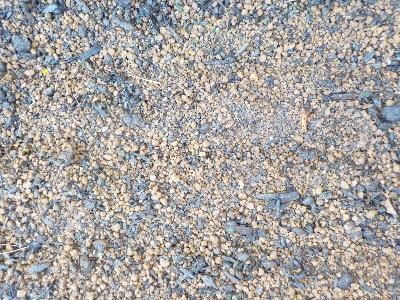
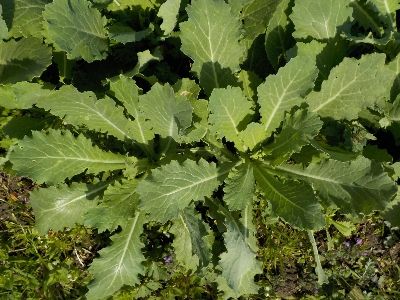
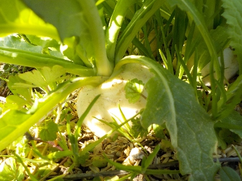
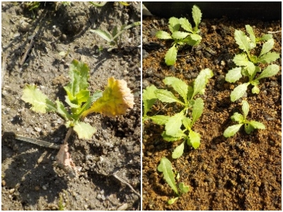

12月で遅いですが、小カブのタネを育苗箱に蒔きました。
更新日 : 2025/12/06

カブのタネが残っていたの育苗箱に蒔きました。
時期が遅いので少し暖かい軒下で育てて、少し大きくなったら畑に植え替えするつもりです。
根菜はあまり植え替えしないですが、小さいうちはやってもいいみたいです。本当に植え替えしていいなら、間引きしたのが活用できるので沢山食べれますよね。
ちょっと実験のつもりでやってみます。
更新日 : 2025/12/06

カブのタネが残っていたの育苗箱に蒔きました。
時期が遅いので少し暖かい軒下で育てて、少し大きくなったら畑に植え替えするつもりです。
根菜はあまり植え替えしないですが、小さいうちはやってもいいみたいです。本当に植え替えしていいなら、間引きしたのが活用できるので沢山食べれますよね。
ちょっと実験のつもりでやってみます。
更新日 : 2026/03/01

普通に畑にタネを蒔いたカブがすくすくと育ちました。葉っぱがキレイでとっても美味しそう。

実もやわらかそうで美味しそうです。

普通にやったものは順調だったんですが、イレギュラーなものは全然ダメでした。
左の写真は上のカブと一緒に生えてて、密で間引いたのを別の場所に植え替えたものです。全然大きくなりませんでした。根菜は植え替えてはいけないっていうのは本当なのかもしれません。
右の写真は育苗床のものです。軒下で暖かいから育つだろうって期待してやったんですが、あまり育たなかったです。
かぶってタネ買っても安いから、普通に育てて美味しく食べるのが一番だと思いました。
カブはお味噌汁の具にするのが好きだな。